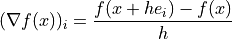

NumericalGradient¶
- class odl.solvers.functional.derivatives.NumericalGradient(*args, **kwargs)[source]¶
Bases:
OperatorThe gradient of a
Functionalcomputed by finite differences.See also
NumericalDerivativeCompute directional derivative
- Attributes:
adjointAdjoint of this operator (abstract).
domainSet of objects on which this operator can be evaluated.
inverseReturn the operator inverse.
is_functionalTrueif this operator's range is aField.is_linearTrueif this operator is linear.rangeSet in which the result of an evaluation of this operator lies.
Methods
__call__(x[, out])Return
self(x[, out, **kwargs]).derivative(point)Return the derivative in
point.norm([estimate])Return the operator norm of this operator.
- __init__(functional, method='forward', step=None)[source]¶
Initialize a new instance.
- Parameters:
- functional
Functional The functional whose gradient should be computed. Its domain must be a
TensorSpace.- method{'backward', 'forward', 'central'}, optional
The method to use to compute the gradient.
- stepfloat, optional
The step length used in the derivative computation. Default: selects the step according to the dtype of the space.
- functional
Notes
If the functional is
 and step size
and step size  is used, the
gradient is computed as follows.
is used, the
gradient is computed as follows.method='backward':method='forward':
method='central':The number of function evaluations is
functional.domain.size + 1if'backward'or'forward'is used and2 * functional.domain.sizeif'central'is used. On large domains this will be computationally infeasible.Examples
>>> space = odl.rn(3) >>> func = odl.solvers.L2NormSquared(space) >>> grad = NumericalGradient(func) >>> grad([1, 1, 1]) rn(3).element([ 2., 2., 2.])
The gradient gives the correct value with sufficiently small step size:
>>> grad([1, 1, 1]) == func.gradient([1, 1, 1]) True
If the step is too large the result is not correct:
>>> grad = NumericalGradient(func, step=0.5) >>> grad([1, 1, 1]) rn(3).element([ 2.5, 2.5, 2.5])
But it can be improved by using the more accurate
method='central':>>> grad = NumericalGradient(func, method='central', step=0.5) >>> grad([1, 1, 1]) rn(3).element([ 2., 2., 2.])